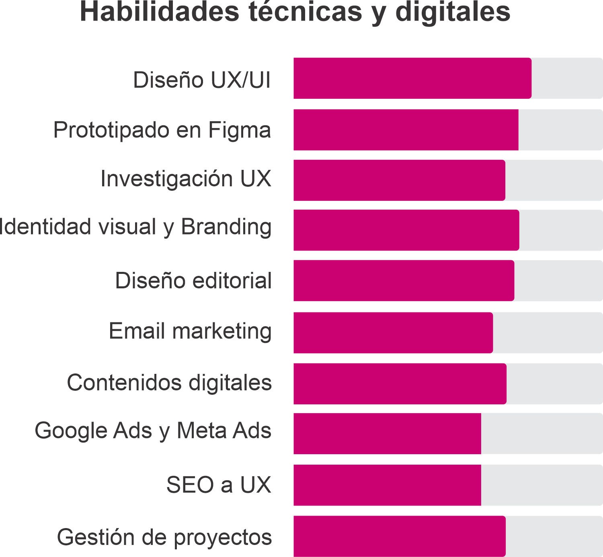
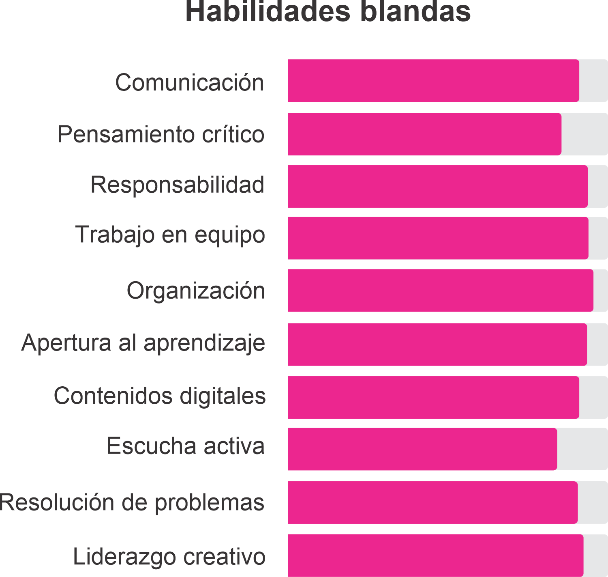

Hola!
Soy, Josdely Alvarado
UX/UI Product Designer | Comunicación y Estrategias Creativas

Diseño Gráfico

Desarrollo Web
Sobre mi
Desde hace más de 9 años me dedico al diseño y la comunicación visual, y he tenido la suerte de trabajar en proyectos que combinan creatividad, estrategia y propósito. Mi recorrido incluye diseño gráfico, branding y UX/UI, pero también muchas experiencias que me han hecho crecer, tanto en lo profesional como en lo personal.
Vivir y trabajar en distintos países me ha dado una mirada más amplia y sensible. Me interesa el diseño que conecta, que escucha, que resuelve de verdad. Me gusta crear experiencias visuales que no solo se vean bien, sino que funcionen, comuniquen y respeten a quienes las usan.
Creo en el diseño como una herramienta para el cambio. Me motivan los proyectos con impacto social, que promuevan la diversidad y la inclusión.
Skills
Con los años he aprendido que no se trata solo de manejar herramientas, sino de entender a las personas, adaptarse a los cambios y resolver con criterio. Me gusta trabajar con orden, propósito y creatividad.
Disfruto aprender, colaborar y buscar siempre una manera mejor de hacer las cosas. Creo en la importancia de lo técnico, sí, pero también en la empatía, la escucha y la mirada estratégica. Todo eso forma parte de cómo entiendo mi trabajo: con compromiso, con humanidad y con ganas de sumar desde lo que sé hacer.

